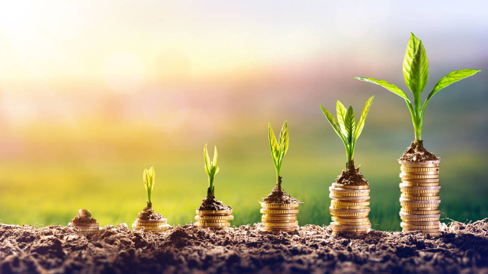

“No tendremos una sociedad si destruimos el medio ambiente”
MARGARET MEAD
¿Qué son los Negocios Verdes? Son actividades económicas en las que se ofertan bienes o servicios que generan un impacto ambiental positivo y que, además, incorporan buenas prácticas ambientales, sociales y económicas. Su papel es vital en la búsqueda de un desarrollo sostenible.
TIPO DE PRODUCTOS El Plan Nacional de Negocios Verdes estableció la clasificación de los Negocios Verdes en 3 categorías acorde con la evolución que han tenido los productos y servicios amigables con el ambiente y el aprovechamiento sostenible de la biodiversidad, en la economía regional, nacional e internacional. A partir de una revisión de la base de datos consolidada de Negocios Verdes a nivel nacional de la que dispone la Oficina de Negocios Verdes y Sostenibles, se consideraron productos que están relacionados con diferentes categorías de Negocios Verdes, pero fueron clasificados en las siguientes para facilitar su ubicación según el producto y no según el recurso natural utilizado como insumo.
En primer lugar, consideramos los productos agrícolas que provienen de sistemas de producción ecológicos, orgánicos y biológicos o con enfoque agroecológico, y que son producidos sin el uso de agroinsumos de síntesis química o con el uso de los mismos según las recomendaciones de buenas prácticas ambientales, que garanticen la capacidad de recuperación de los sistemas productivos, sin el uso de organismos genéticamente modificados, de especies invasoras, y sin la promoción de monocultivos.
En segundo lugar, consideramos los productos procesados que tienen en cuenta el ciclo de vida para la adquisición de sus insumos, los cuales generalmente tienen un origen en los productos definidos en el primer punto, y que están destinados para la alimentación humana. En este grupo encontramos Aceites, Bebidas, Cereales, Condimentos, Pulpas y Snacks.
En tercer lugar, consideramos productos procesados que aunque tienen su origen en sistemas de producción ecológica, orgánica y biológica, principalmente, no están destinados para el consumo humano. En este grupo encontramos Alimento para animales, productos para Aseo del hogar, de Aseo personal, Cosméticos, Empaques y Medicinales.
En un cuarto grupo, encontramos los productos que tienen su origen en el aprovechamiento y valorización de residuos orgánicos y que son desarrollo de la estrategia nacional de Economía Circular, donde contamos con una amplia oferta de abonos, que se constituyen en un insumo indispensable para la producción ecológica, orgánica y biológica.
Finalmente, tenemos un quinto grupo dedicado a productores de implementos para vestir, principalmente con origen en el aprovechamiento de residuos inorgánicos.
